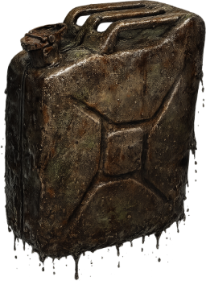
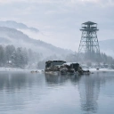

ВИД № 133 / V10Условия ловли
Глубина указана относительно глубины водоёма в точке заброса.
Ловится на спиннинг
Агрессивность
Базовая сила сопротивления: вес × 1. Разница уровней рыбы и снасти может увеличить нагрузку.
Коэффициент выбора
1 / 200 = 0,005
Это вес вида при выборе улова с учётом условий ловли, а не вероятность поклёвки в процентах.
Данные каталога
Клиент v10 · снимок 29.09.2026. Автоматического обновления нет. Для специальных находок могут действовать дополнительные условия снастей.
Вес и редкость
Порог следующей редкости завершает предыдущий диапазон. Трофей — вес строго больше 4 кг. 7 кг — опорный порог эпической редкости, а не максимальный возможный вес.
Наживки
 Червь
Червь Мормыш
Мормыш Мотыль
Мотыль Опарыш
Опарыш
Прикормки
Не реагирует на прикормки.
Водоёмы

Кругленькое
Малые Щучки · 32–37 ур.
Разряд 5 · Холод 4

Котлован
Малые Щучки · 54–57 ур.
Разряд 8 · Холод 9
Исходные параметры
| key | jerrycan |
|---|---|
| minWeight | 1500 |
| maxWeight | 4000 |
| rarity | 1 |
| rarity-max | 200 |
| rareWeight | 7000 |
| price | 22 |
| depth | bottom |
| areal-grass | true |
| areal-stone | true |
| areal-sand | true |
| frameId | 130 |
| uid | 133 |
| agressiveRate | 100 |
| type | item |
| tackleBait | true |
price — исходный параметр, а не итоговая цена продажи.